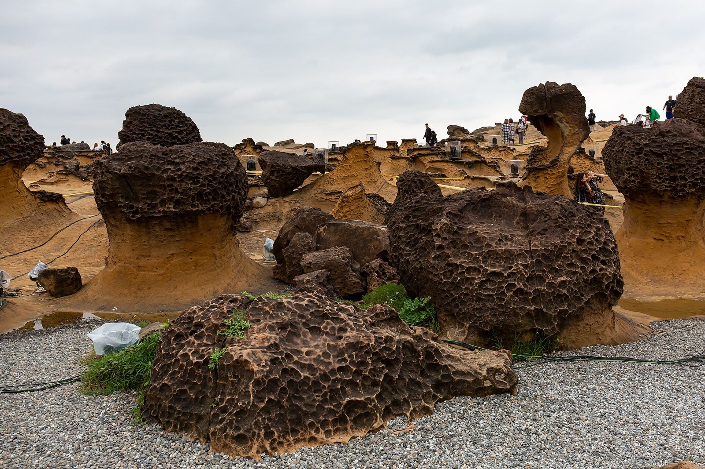
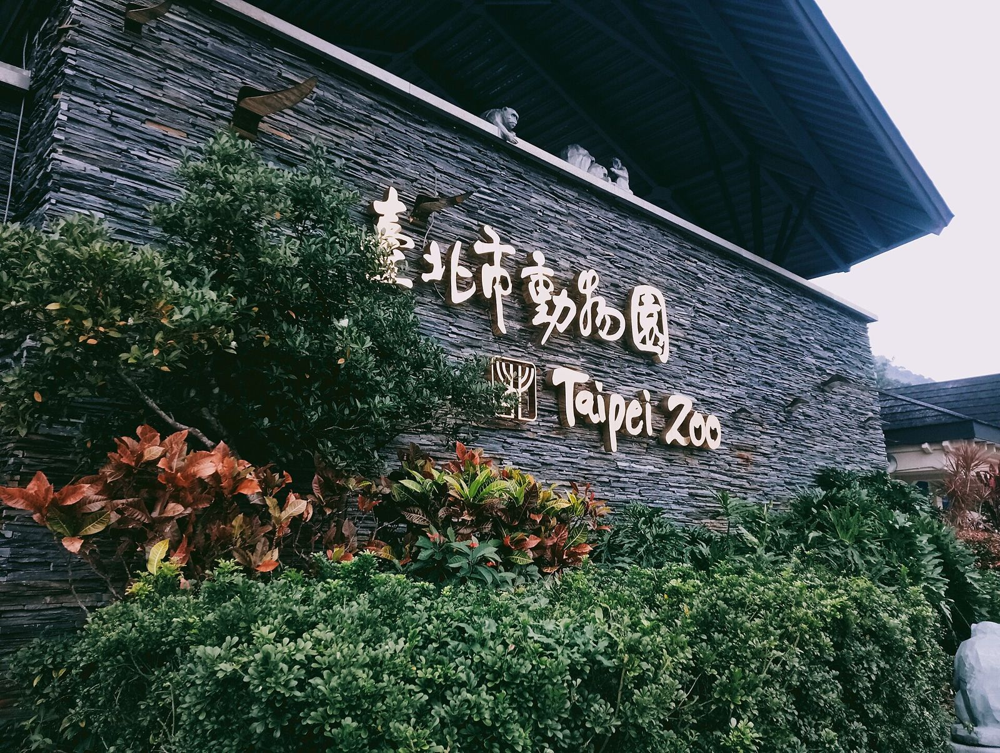

예스지 투어 vs 타이베이 동물원, 초등 저학년 아이와 어디?
바닷가 기암과 풍등이냐, 판다와 코알라냐 — 아이 체력과 그날 날씨로 고르면 실패가 적어요.
게시
예스지 투어와 타이베이 동물원 중 하루만 고른다면, 초등 저학년 아이에게는 어디가 나을까요? 예스지 투어는 예류(野柳)·스펀(十分)·지우펀(九份)을 하루에 도는 신베이 근교 코스이고, 타이베이 시립동물원은 MRT로 갈 수 있는 시내 동물원이에요. 아이와 다녀온 여행자들의 의견은 꽤 갈려서, 예류 지질공원과 동물원 공식 안내를 바탕으로 아이 기준 차이를 2026년 10월 기준으로 정리해봤어요.
01 · 예스지 투어 vs 타이베이 동물원, 한눈에 비교
| 항목 | 예스지 투어 (예류·스펀·지우펀) | 타이베이 동물원 |
|---|---|---|
| 아이가 좋아할 포인트 | 기암·화석 관찰, 풍등에 소원 쓰기 | 판다·코알라·펭귄 등 동물, 실내관 |
| 하루 흐름 | 세 곳을 차로 이동, 곳마다 짧게 머묾 | 한 곳에서 원하는 만큼, 1~2시간 짧은 동선도 있음 |
| 날씨 영향 | 바닷가라 바람·비에 크게 좌우돼요 | 실내관이 있어 비 오는 날 대안이 돼요 |
| 운영 (2026년 10월 기준) | 예류 08:00~17:00(여름 18:00까지) | 09:00~17:00, 입장 마감 16:00 |
| 쉬는 날 | 예류는 강풍·태풍 때 문을 닫기도 해요 | 음력 섣달그믐·6월 하순 휴원, 월요일마다 일부 관 휴관 |
| 요금 | 요금은 방문 전 공식 안내를 확인하세요 | 요금은 방문 전 공식 안내를 확인하세요 |
아이와 다녀온 여행자들 사이에서는 예스지 투어 쪽을 고른 의견이 더 많았어요. 스펀에서 풍등을 날린 것과 예류에서 화석을 찾아본 것이 기억에 남았다는 이야기가 나왔습니다. 반대로 예류는 그늘이 거의 없고 감흥이 사람마다 다르다는 의견, 동물원은 넓은 데 비해 볼거리가 기대보다 적었다는 의견도 함께 있었어요. 결국 아이의 관심사와 그날 날씨가 기준이에요.

02 · 예스지 투어, 아이와 가면 이런 점을 챙기세요
예류 화석은 '찾아보기'만 예류 지질공원 1구역에는 성게 화석(海膽化石), 2구역에는 생흔 화석(生痕化石)이 안내돼 있어요. 화석·돌·조개껍데기를 가져가는 것은 법으로 금지돼 있으니 눈으로 찾는 놀이로 해주세요.
바위 오르기·난간 넘기 금지 기암에 올라가거나 안전선·난간을 넘는 행위는 금지되고 벌금 대상이에요. 아이가 바위에 올라가고 싶어 할 수 있으니 미리 약속해 두면 편해요.
킥보드·자전거는 못 들어가요 예류 지질공원은 자전거·킥보드를 포함한 모든 탈것의 진입을 막고 있어요. 아이 킥보드는 차에 두고 내리세요.
바람 부는 날은 휴원 공지부터 예류는 동북계절풍으로 바람과 파도가 셀 때 공원을 임시로 닫은 적이 있어요(2025년 10월 20일 북관처 공지). 가을·겨울에는 당일 아침 공식 공지를 확인하세요.
스펀 풍등은 소원 쓰기부터 신베이시 관광 안내에 따르면 스펀 옛거리에서는 붓으로 풍등에 소원을 쓰고, 가게에서 날리는 자세와 사진 촬영을 도와줘요. 열차가 옛거리 한가운데로 지나가니 선로를 함부로 건너지 않게 아이 손을 꼭 잡아 주세요.
지우펀은 인파 대비 지우펀은 주말에 특히 붐벼요. 좁은 골목에서 아이를 놓치지 않게 만날 장소를 미리 정해 두면 좋아요.
03 · 타이베이 동물원, 아이와 덜 지치는 법
공식 '아이 동반' 코스를 쓰세요 동물원 공식 추천 코스에는 아이 동반용이 따로 있어요. 1~2시간짜리 짧은 코스는 대만 동물구 → 교육센터 → 천산갑관 → 판다관 → 코알라관 순서예요.
동물 전시는 16:30까지 개원은 09:00~17:00이지만 입장 마감은 16:00, 동물 전시는 16:30까지예요. 오후 늦게 가면 볼 시간이 짧아져요.
월요일엔 휴관하는 관 확인 매달 첫째 월요일 판다관, 둘째 월요일 열대우림 실내관(천산갑관)·펭귄관, 셋째 월요일 양서파충류관, 넷째 월요일 곤충관이 쉬어요. 교육센터는 월요일마다 휴관이에요.
비 오는 날엔 실내관 위주로 판다관·코알라관·펭귄관·곤충관처럼 실내 전시관이 여럿이라, 비가 오면 실내관을 묶어서 보는 동선이 편해요. 태풍으로 타이베이시가 휴무를 발표한 날은 동물원도 쉬어요.
한 번에 다 보려 하지 않기 동물원도 '넓어서 한 번에 다 보기 힘들다'고 안내해요. 아이가 좋아하는 동물 2~3곳을 먼저 정하고 가면 만족도가 높아요.

04 · 우리 아이에게는 어디가 맞을까
차 이동이 괜찮고 바다·돌을 좋아한다면 예스지 투어가 맞아요. 다만 이동이 길어 하루가 빡빡하니 전날 일정을 가볍게 잡아 두세요.
동물을 좋아하고 쉬엄쉬엄 다니고 싶다면 동물원이 맞아요. 지치면 바로 돌아올 수 있고, 남는 시간은 시내 일정으로 채울 수 있어요.
날씨가 애매한 날이라면 비나 강풍 예보가 있으면 실내관이 있는 동물원이 안전한 선택이에요. 맑고 바람이 약한 날을 예스지 투어로 쓰세요.
동물원 가는 법과 셔틀 열차 동선은 타이베이 동물원, 셔틀로 올라가 걸어 내려오면 덜 힘들까?에, 투어 방식 비교는 예스폭진지 택시투어 vs 버스투어에, 대중교통으로 도는 법은 예류 지우펀 버스와 핑시선 루이팡·허우퉁·스펀 글에 정리해 두었어요. 지우펀이 붐비는 요일은 지우펀 금요일 vs 일요일을, 아이와 갈 만한 다른 곳은 아이와 타이베이 여행과 타이페이 어린이공원을 참고하세요. 먹을 곳은 타이베이 맛집 지도, 타이베이 체험·관광지, 예류·스펀·지우펀 맛집 지도와 스펀 소세지 상세 페이지에서 고르면 돼요.
지도에서 타이베이 체험·관광지도 확인해보세요
아이와 들를 곳과 근처 먹을 곳을 지도에서 미리 골라 보세요.